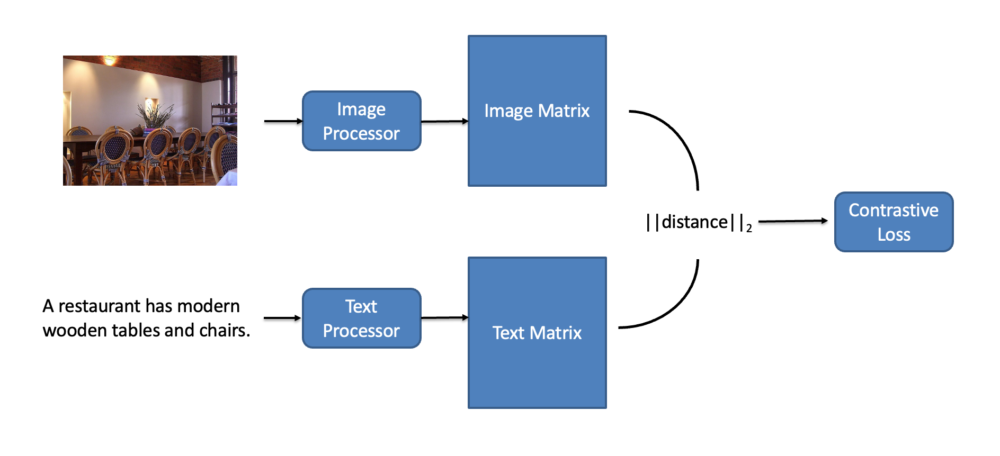

Background
With the rapid development of technology, a large number of multi-modality data have been created
through internet and how to process these multi-modality data has
become a hotspot topic. Image-text matching task is for
this topic, which has drawn plenty attentions in computer
vision (CV) and natural language processing (NLP) fields. Traditionally, this problem has been explored
by
directly comparing the similarity between semantic space
features from both text and image data. However, this
method is inherently to be computationally intensive as it
requires fined understanding of both image and text data.
Overview
In this work, we proposed a bi-track processor structure
to tackle the problem of alignment between image objects
and text words. Specially, we reckon this task as a binary
match task - given image and text as input, we predict the
output as match or not match. As shown in Fig.1, our struc-
ture gives an insight of trustworthy matching process. We
design an object detector to detect the objects in image and
use pre-trained model to generate the semantic embedding
for text. And in the last stage, we apply an attention-based layer to deal with the multimodality data
alignment to get
the similarity between given image-text pair.

Data source
In this work, we will use Microsoft Common Objects in
Context (COCO) as the dataset of our task. COCO consists
of 123287 images, and each one is associated with five sen-
tences. Due to the limit computing resources, we will use
part of them.
We use COCO API to
mapulate data source. The COCO API assists in loading,
parsing, and visualizing
annotations in COCO. The API supports multiple annotation formats./div>
PipeLine

Image Processor
ResNet
VGG19

Text Procesoor
Tokenizer + Bert

Word2Vec: Skip-Gram, CBOW
References
- [1] Chunxiao Liu, Zhedong Mao, Tianzhu Zhang, Hongtao Xie, Bin Wang and Yongdong Zhang. Graph structured network for image-text matching. arXiv: 2004.00277v1, 2020.
- [2] Zhedong Zheng, Liang Zheng, Michael Garrett, Yi Yang, Mingliang Xu and Yi-Dong Shen. Dual-path convolutional image-text embedding with instance loss. arXiv: 1711.05535v4, 2021.
Accuracy
Conclusion
-
We evaluated the text-image retrieval performance over the combination of several common visual and language models.
-
We show that although deeper models (Bert, VGG19) achieve better accuracy, they tend to use significant more computation resources.
Future Work
Current finding suggests relatively low information density in learnt features. Thus, its worth to
explore more resource efficient learning models and feature representations.
Menbers
Yiqin Zhao
yzhao11@wpi.edu
Kai Zhang kzhang8@wpi.edu
Yang Wu ywu19@wpi.edu
Zihao Zhou zzhou5@wpi.edu